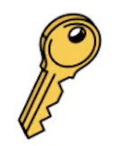
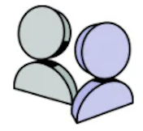

Branches
Abstract Branches lets you manage,
version, and document your designs in
one place.
Learn More
Manage organizations, teams, and
projects
Use Abstract organizations, teams, and
projects to organize your people and your
work.
Learn Mores

Authentication to Abstract
Set up and configure SSO,SSCIM, and
Just-in-Time provisioning.
Learn More

Manage your account
Configure your account settings, such as
your email, profile details, and password.
Learn More
Manage billing
Change subscriptions and payment
details.
Learn More
Abstract support
Get in touch with a human.
Learn More